The main impact of a 200 basis-point (2.00 percentage-point) rise in United States interest rates on Russia is a 0.03% drop in GDP by the 11th quarter — a minimal spillover. Russia sits in the "minimal" band, ranked 27th by absolute GDP response, and the headline number is small in both absolute and relative terms: real GDP (the model's output measure) bottoms at −0.0278% versus baseline in Q11, having drifted only −0.0014% below baseline in Q1. This is not a story about Russia being hit hard by US tightening; it is a story about a modest, delayed, and largely self-correcting drag that works its way through trade and financial channels before fading.
Demand and trade. Household consumption falls to −0.0108% below baseline at its Q11 trough, a small but persistent drag as tighter external conditions feed through to incomes and confidence. Private investment is the more visible casualty, peaking at −0.0587% below baseline in Q9 as the cost of capital rises and expected returns soften; it then recovers and actually turns positive from Q17, ending Q20 at +0.0146%. Net exports — the trade balance, since this model does not split imports from exports — deteriorate to −0.0765% below baseline at Q13, the largest single drag in the demand block, and unlike investment it does not recover: it remains −0.0386% below baseline at Q20. Government spending declines to −0.0206% below baseline at Q13 and is still −0.0118% below baseline at Q20, while government debt edges down to −0.0046% below baseline at Q15, a small consolidation rather than a debt blowout.
External / FX. The real exchange rate — currency strength — appreciates to +0.0783% above baseline at Q11, meaning the rouble is stronger in real terms than in the baseline. That lines up cleanly with the net exports result: a stronger currency makes Russian exports less competitive and imports cheaper, which is exactly why the trade balance deteriorates to −0.0765% at Q13 even as the currency peaks two quarters earlier. The currency strength fades slowly, still +0.0044% above baseline at Q20.
Labour. Employment falls to −0.0109% below baseline at Q14, a shallow decline that mirrors the modest output gap. Unemployment rises to +0.009 percentage points above baseline at Q13 — a tiny move in level terms, but the right sign and timing. Real wages are the most persistent labour-market casualty: they dip only slightly positive early on, cross below baseline at Q10, and then fall steadily to −0.0289% below baseline at Q20, the largest labour-market effect and one that has not faded by the end of the horizon.
Prices. CPI inflation falls to −0.005 percentage points below baseline at Q11, a very small disinflationary impulse; it is briefly positive in the first four quarters before crossing below baseline at Q5. Domestic inflation follows a similar path, bottoming at −0.0035 percentage points below baseline at Q11. Firms' marginal cost declines to −0.0165% below baseline at Q11, consistent with softer demand and weaker input costs, and it is back above baseline by Q20.
Financial conditions. The local policy rate falls to −0.0203 percentage points below baseline at Q13 — the central bank easing into the slowdown — after a brief initial rise in the first five quarters. Government 2-year yields fall to −0.0175 percentage points below baseline at Q10, 5-year yields to −0.0086 percentage points below baseline at Q3, and 10-year yields are barely moved, dipping to −0.0008 percentage points below baseline early on and then rising to +0.0032 percentage points above baseline by Q20. Bond prices fall to −0.1353% below baseline at Q8 as higher discount rates bite, then swing positive from Q12 and end Q20 at +0.0118%. Equity prices are the sharpest financial response, falling to −0.4485% below baseline at Q8 before recovering to −0.0109% below baseline at Q20. Tobin's Q — the value of installed capital — falls to −0.0411% below baseline at Q9 and turns positive from Q17. House prices decline steadily to −0.0243% below baseline at Q15 and are still −0.0188% below baseline at Q20, the most persistent financial drag. Bank credit contracts to −0.0036% below baseline at Q18, and lending spreads widen by a trivial +0.0001 percentage points at Q17.
Sectoral and capital. Manufacturing GDP falls to −0.0223% below baseline at Q10, the deeper sectoral hit, and recovers to +0.0027% above baseline by Q20. Services GDP falls to −0.0153% below baseline at Q11 and is back above baseline at Q20. The capital stock declines to −0.0025% below baseline at Q16 and remains −0.0024% below baseline at Q20 — a slow, cumulative depreciation effect that outlasts the cyclical recovery.
Timing. The GDP hit is largest in Q11 at −0.0278% below baseline, and it has largely faded by Q18; by Q20 the level is +0.002% above baseline, a sign change that reflects the model's recovery dynamics rather than a permanent scar. The equity and bond-price troughs arrive earlier, at Q8, while the labour-market and house-price effects lag into the mid-teens.
Close. These are model impulse responses to a single identified shock — a 200 basis-point rise in US rates — measured against a baseline path, not forecasts. They describe how the model economy deviates from its own baseline, not where Russian GDP, inflation, or asset prices are expected to be in absolute terms.
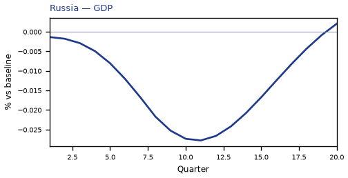
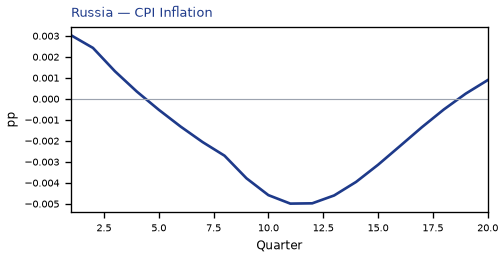
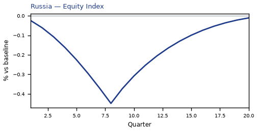
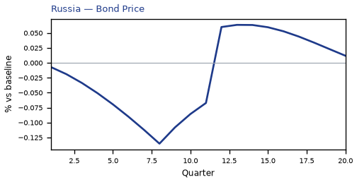
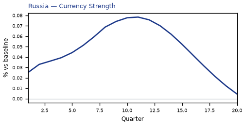
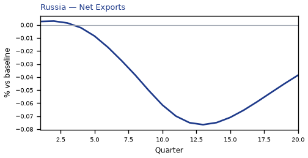
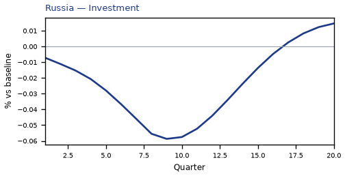
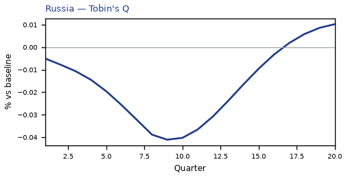
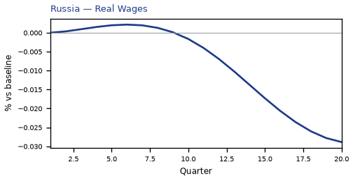
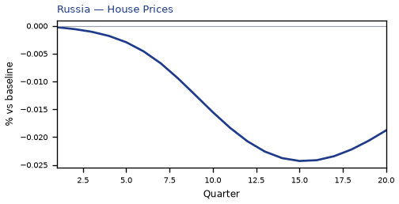
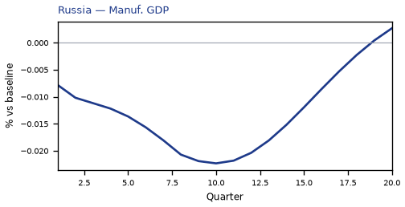
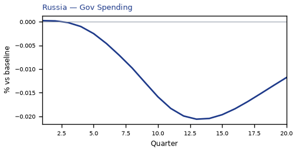
source=live · global_macro_v5 · contract v6 · Q1–Q20 JSON · not financial advice